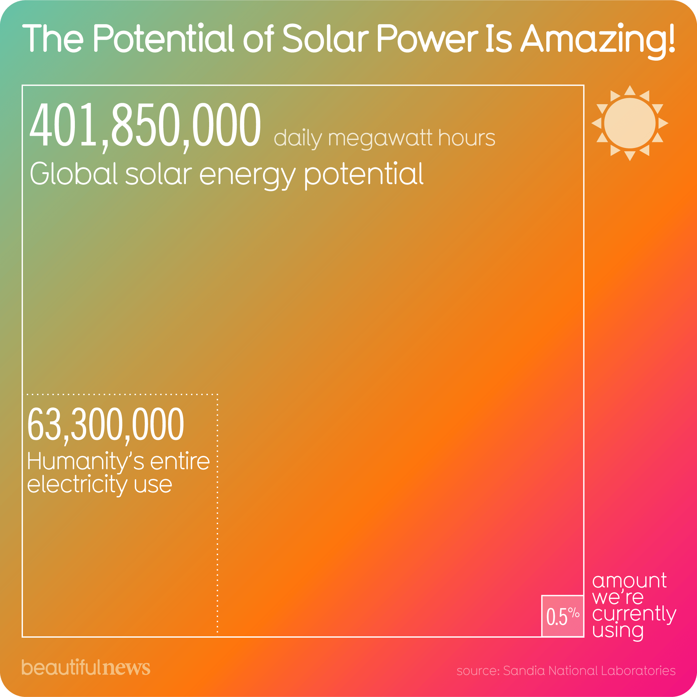
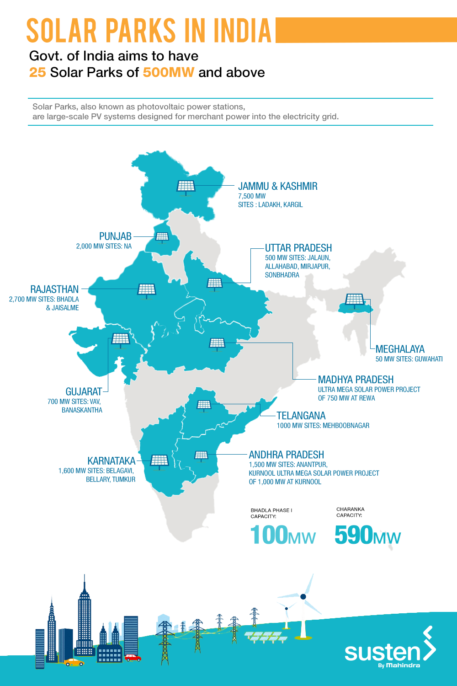

Solar energy is radiant light and heat from the Sun that is harnessed using a range of ever-evolving technologies such as solar heating, photovoltaics, solar thermal energy, solar architecture, molten salt power plants and artificial photosynthesis.[1][2]
It is an essential source of renewable energy, and its technologies are broadly characterized as either passive solar or active solar depending on how they capture and distribute solar energy or convert it into solar power. Active solar techniques include the use of photovoltaic systems, concentrated solar power, and solar water heating to harness the energy. Passive solar techniques include orienting a building to the Sun, selecting materials with favorable thermal mass or light-dispersing properties, and designing spaces that naturally circulate air.
The large magnitude of solar energy available makes it a highly appealing source of electricity. The United Nations Development Programme in its 2000 World Energy Assessment found that the annual potential of solar energy was 1,575–49,837 exajoules (EJ). This is several times larger than the total world energy consumption, which was 559.8 EJ in 2012.[3][4][needs update]
In 2011, the International Energy Agency said that "the development of affordable, inexhaustible and clean solar energy technologies will have huge longer-term benefits. It will increase countries' energy security through reliance on an indigenous, inexhaustible, and mostly import-independent resource, enhance sustainability, reduce pollution, lower the costs of mitigating global warming, and keep fossil fuel prices lower than otherwise. These advantages are global. Hence the additional costs of the incentives for early deployment should be considered learning investments; they must be wisely spent and need to be widely shared".[1]
The Earth receives 174 petawatts (PW) of incoming solar radiation (insolation) at the upper atmosphere.[5] Approximately 30% is reflected back to space while the rest is absorbed by clouds, oceans and land masses. The spectrum of solar light at the Earth's surface is mostly spread across the visible and near-infrared ranges with a small part in the near-ultraviolet.[6] Most of the world's population live in areas with insolation levels of 150–300 watts/m2, or 3.5–7.0 kWh/m2 per day.[7]
Solar radiation is absorbed by the Earth's land surface, oceans – which cover about 71% of the globe – and atmosphere. Warm air containing evaporated water from the oceans rises, causing atmospheric circulation or convection. When the air reaches a high altitude, where the temperature is low, water vapor condenses into clouds, which rain onto the Earth's surface, completing the water cycle. The latent heat of water condensation amplifies convection, producing atmospheric phenomena such as wind, cyclones and anticyclones.[8] Sunlight absorbed by the oceans and land masses keeps the surface at an average temperature of 14 °C.[9] By photosynthesis, green plants convert solar energy into chemically stored energy, which produces food, wood and the biomass from which fossil fuels are derived.[10]
The total solar energy absorbed by Earth's atmosphere, oceans and land masses is approximately 3,850,000 exajoules (EJ) per year.[11] In 2002, this was more energy in one hour than the world used in one year.[12][13] Photosynthesis captures approximately 3,000 EJ per year in biomass.[14] The amount of solar energy reaching the surface of the planet is so vast that in one year it is about twice as much as will ever be obtained from all of the Earth's non-renewable resources of coal, oil, natural gas, and mined uranium combined,[15]>

The potential solar energy that could be used by humans differs from the amount of solar energy present near the surface of the planet because factors such as geography, time variation, cloud cover, and the land available to humans limit the amount of solar energy that we can acquire.
Geography affects solar energy potential because areas that are closer to the equator have a higher amount of solar radiation. However, the use of photovoltaics that can follow the position of the Sun can significantly increase the solar energy potential in areas that are farther from the equator.[4] Time variation effects the potential of solar energy because during the nighttime, there is little solar radiation on the surface of the Earth for solar panels to absorb. This limits the amount of energy that solar panels can absorb in one day. Cloud cover can affect the potential of solar panels because clouds block incoming light from the Sun and reduce the light available for solar cells.
Besides, land availability has a large effect on the available solar energy because solar panels can only be set up on land that is otherwise unused and suitable for solar panels. Roofs are a suitable place for solar cells, as many people have discovered that they can collect energy directly from their homes this way. Other areas that are suitable for solar cells are lands that are not being used for businesses where solar plants can be established.[4]
Solar technologies are characterized as either passive or active depending on the way they capture, convert and distribute sunlight and enable solar energy to be harnessed at different levels around the world, mostly depending on the distance from the equator. Although solar energy refers primarily to the use of solar radiation for practical ends, all renewable energies, other than Geothermal power and Tidal power, derive their energy either directly or indirectly from the Sun.
Active solar techniques use photovoltaics, concentrated solar power, solar thermal collectors, pumps, and fans to convert sunlight into useful outputs. Passive solar techniques include selecting materials with favorable thermal properties, designing spaces that naturally circulate air, and referencing the position of a building to the Sun. Active solar technologies increase the supply of energy and are considered supply side technologies, while passive solar technologies reduce the need for alternate resources and are generally considered demand-side technologies.[20]
Some physics behind it
When the photodiode is illuminated with light (photons) with energy (hν) greater than the energy gap (Eg ) of the semiconductor, the electron-hole pairs are generated due
to the absorption of photons. The diode is fabricated such that the generation of e-h pairs takes place in or near the depletion region of the diode. Due to electric field of the junction,
electrons and holes are separated before they recombine. The direction of the electric field is such that electrons reach n-side and holes reach p-side.
Electrons are collected on n-side and holes are collected on p-side giving rise to an emf.
When an external load is connected, current flows. The magnitude of the photocurrent depends on the intensity of incident light.
Photocurrent is proportional to incident light intensity
And for more info check these out
Solar power & plants in india

Solar power in India is a fast developing industry as part of the renewable energy in India. The country's solar installed capacity was 44.3 GW as of 31 August 2021.[2]
The Indian government had an initial target of 20 GW capacity for 2022, which was achieved four years ahead of schedule.[3] In 2015 the target was raised to 100 GW of solar capacity (including 40 GW from rooftop solar) by 2022, targeting an investment of US$100 billion.[4][5] India has established nearly 42 solar parks to make land available to the promoters of solar plants. The Ministry of New and Renewable Energy had stated that a further 36.03 GW (as of January 31, 2021) of solar projects are under various stages of implementation and 23.87 GW are in the tendering process.[6]
Rooftop solar power accounts for 2.1 GW, of which 70% is industrial or commercial.[7] In addition to its large-scale grid-connected solar photovoltaic (PV) initiative, India is developing off-grid solar power for local energy needs.[8] Solar products have increasingly helped to meet rural needs; by the end of 2015 just under one million solar lanterns were sold in the country, reducing the need for kerosene.[9] That year, 118,700 solar home lighting systems were installed and 46,655 solar street lighting installations were provided under a national program;[9] just over 1.4 million solar cookers were distributed in India.[9]
The International Solar Alliance (ISA), proposed by India as a founder member, is headquartered in India. India has also put forward the concept of "One Sun One World One Grid" and "World Solar Bank" to harness abundant solar power on global scale.